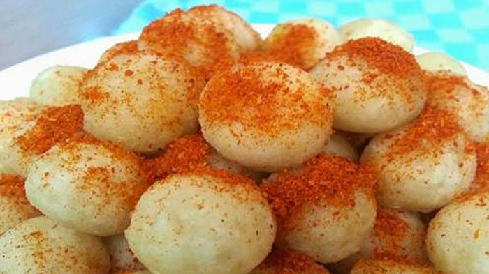

Cimol

Cimol merupakanan makanan khas dari Bandung, cimol sendiri dalam bahasa sunda memiliki arti yaitu aci di gemol, maksudnya adonan cimol yang terbuat dari bahan aci atau tepung kanji di gemol menjadi bentuk bulat-bulat kecil lalu digoreng, dalam penyajianya cimol biasanya dimakan dengan tambahan taburan bumbu dengan berbagai rasa.
Ini adalah resep untuk membuatnya :
Bahan-bahan :
- 400 gram aci / tepung sagu
- 75 gram tepung beras
- 25 gram tepung terigu
- 300 ml air panas
- 1 sdt baking soda kue
- 1 sdt lada
- Garam secukupnya
Cara Membuat :
- Pertama tama masukan tepung sagu, tepung terigu, tepung beras dan garam dalam wadah, aduk merata.
- Tambahakan air sedikit demi sedikit sambil diaduk sampai adonan tercampur dan mengental
- Tambahka baking soda, aduk lagi sampai tercampur.
- Bentuk adonan menjadi bulatan kecil kecil sampai adonan habis. atau jika ingin bentuk yang lain silahkan variasikan sesuai selera.
- Goreng cimol dalam minyak panas sampai matang.
- sajikan dengan sambal kacang atau sambal balado sesuai selera.